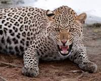
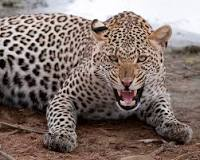

My official name is Vitalis Mikima Omulo. My father and calls me Anot. Anot is pronounced 'a note' with the name simplyimplying that I should be having lots of notes (money).The leopard is my favorite animal. Just like the leopard that is a calm and sure hunter I am quite and carefully plans my hunts.
 

I am an Industrial Chemistry graduate from Kenyatta University having graduated in 2015.
I have a two-year job experience as a laboratory chemist at VitalPharmaceuticals where I have actively engaged in quality control operations and management.I have also acted as a general manager for Komulo Group of industries for 2 years.
I have always seen myself as an innovator, a problem solver. While Chemistry is my first love, I believe that integrating research and tech will place at a better place in becoming a better person
In my efforts to lead a holistic life, I try to engage in activties that will eventually lead to development of my physical, mental,emotional, social and spiritual. In my pasttime you will thus find me reading, travelling, weightlifting, writing, socializing and hiking.